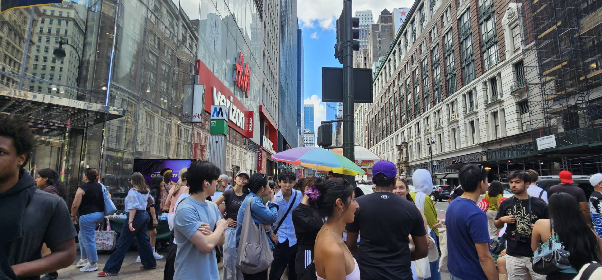
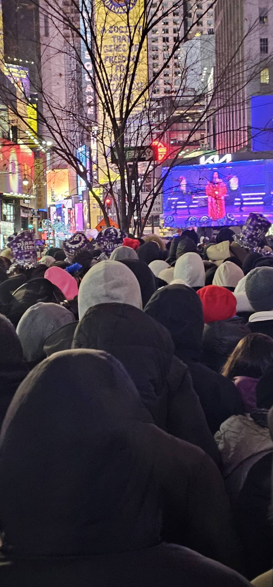
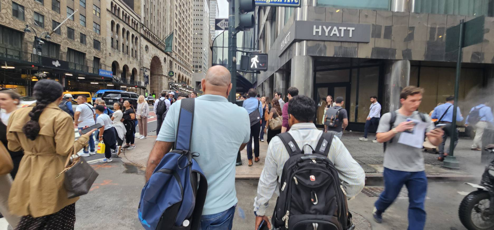

Why NYC is
So Crowded?
New York City Population Estimates and Trends

Population and Limited Access
New York City is a densely populated urban environment where millions of people live,
work, and travel every day. As the population grows, more people share the same
streets, housing, transportation systems, and public spaces. However, a large
population alone does not necessarily make a city crowded; the concentration of
people within a limited area is also an important factor. Population density provides
a way to understand the relationship between population and space.
The NYC Department of City Planning’s 2025 report explains how New York City’s
population has changed in recent years, particularly following the major population
decline during the COVID-19 pandemic. According to the report, New York City had an
estimated 8.478 million residents in July 2024, after gaining approximately 87,000
people between July 2023 and July 2024. This was the second consecutive year of
population growth, suggesting that the population decline during the pandemic was
temporary rather than a permanent change in the city’s population trend.
The increase occurred across all five boroughs, with Manhattan experiencing the
largest growth at 1.7%, followed by Brooklyn and Queens at about 1.0%, and the Bronx
and Staten Island at about 0.7%. This recent growth was largely influenced by
international migration, along with fewer people moving out of New York City to
other parts of the United States.
At the same time, changes in births and deaths have become increasingly important
because NYC, like many places in the United States, is experiencing fewer births.
Also, some previous population estimates were revised because the Census Bureau
improved its methods for estimating international migrants and people living in
shelters. Overall, the report shows that New York City continues to have a very
large and growing population, meaning that millions of people continue to live,
work, and use the city’s limited urban space.
Tourism
New York City can be understood not simply as a densely populated urban environment,
but as a complex social and cultural space shaped by the interaction of power, culture,
and place. Different social groups and institutions contribute to the development and
transformation of the city, while government agencies, private businesses, developers,
and local communities possess different levels of influence over the use and development
of urban space. These differences in influence can result in unequal experiences of the
city among its residents. At the same time, cultural practices, including art, music,
food, architecture, and community traditions, contribute to the formation of neighborhood
identities and influence how spaces are perceived and used.
The physical environment of New York—including its buildings, streets, transportation
networks, and public spaces—therefore reflects not only patterns of population and
development but also broader social, economic, and cultural relationships.
Understanding these connections provides a broader framework for examining how New York
City continuously changes and how different populations experience and shape the urban environment.

